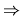
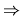

| Program Modules |
The relations
 and

are defined over the set of functions of a program.
and

are defined over the set of functions of a program.
In addition, it is known that:
A computer aided software engineering system is able to group the functions of a program into modules according to the following rules:
Write a program that is able to modularize a program according to the rules (1) and (2) given above. The
program reads sets of data from a text file. Each set of data stands for a different program to be modularized
and has the format:
The result of the program is on standard output. For each data set the program lists the function names of
each computed module, one module per line. The names of the functions of a module are listed in ascending
lexicographic order and are separated by single spaces. The modules are listed ascendingly according to the
lexicographic order of their first component (function name). The output for the data set is followed by an empty
line.
. (a a) (a b) (b). (a b c) (b a e) (c d) (d d) (e b).
a b a b e c d